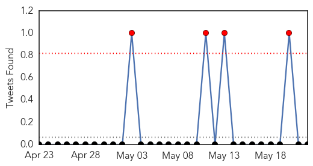
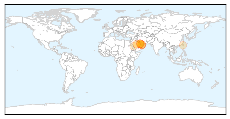

MERS
30-Day Web Trend
3 alerts, 0 warnings

30-Day Twitter Trend
0 alerts, 0 warnings

Article Locations
Article Confidences

Top Articles:
- 0.998
- 64 isolated, news, Health News, AsiaOne YourHealth
- 0.994
- MERS-CoV fears rising following new cases in South Korea
- 0.993
- South Korea confirms 3 cases of Mideast respiratory virus
- 0.992
- Gulf Daily News Local News Mers outbreak didn't originate in Bahrain say health officials
- 0.987
- Supreme Council of Health Announces 3rd Coronavirus Case in Qatar
- 0.963
- SCH reports a new case of #MERS CoV
- 0.721
- Tourism Bureau seeks to attract Muslim visitors
- 0.599
- Health Ministry accused of procrastination in paying doctors’ fees
Top Tweets:
-
No tweets found for May 22, 2015
West Nile Virus
30-Day Web Trend
0 alerts, 0 warnings
30-Day Twitter Trend
0 alerts, 0 warnings

Article Locations
Article Confidences

Top Articles:
- 0.998
- Texas reports year’s first West Nile case in Harris County
- 0.982
- Officials urge precautions after seeing state's first human West Nile case of year
- 0.975
- Texas Department of State Health Services reports state's first case of West Nile illness this year
- 0.932
- Drought may be to blame for early West Nile Virus detection
Top Tweets:
-
No tweets found for May 22, 2015